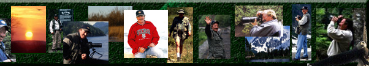
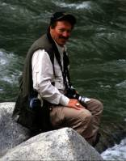
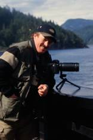
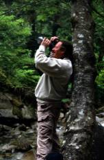

|
|
||||||
|
 |
||||||
| |
|
|||||
| |
|
|
|
|
||
|
|
||||||
A Brief biography of Gregory L. Bass:
|
||||||||||||||||||
|
Greg has completed three
major works “Hill Country Inspirations,” “Texas
River Times,” and “Fall of the Rose Petals Scatter of the Wind.”
Hill Country Inspirations was published in 1988 by Bandera Press,
Texas River Times was considered for publication in 1990. His most recent work “Seven Days with Omari”, the fascinating adventure
of his photo safari in Africa, is still in
progress. Greg originated PhotoPoems while working in his home state
of Wisconsin and incorporated PhotoPoems while living in Texas. Greg
is a graduate in literature and composition from the University of Wisconsin-Whitewater
and taught composition for ten years prior to his business consulting
career. Greg has been writing for over thirty years and active as
a photographer for fifteen years. While in Wisconsin Greg also completed
“Woodland Characters and Other Trails of life.”and “Tales from the Ghost Bear,” is a continual work in process. |
||||||||||||||||||
| A word from Greg | ||||||||||||||||||

|
PhotoPoems integrates story poems with nature
oriented photography. The photos enhance the energy of the poetry to express
themes about life. The primary themes presented in “Hill Country Inspirations”
presents a perspective of the relationship which exists between God, nature
and man. |
|||||||||||||||||
| The relationship
between God, nature and man is intrinsic to the plan of the universe. An
element which is foremost in this relationship is beauty. God does not create
without the intent of beauty. |
||||||||||||||||||
| Man’s relationship to his natural surroundings is but a small thread in God’s intricate plan of the universe. Our realization of this relationship, between ourselves and the natural habitat we live in, from this perspective, is not only humbling, but also enlightening. | ||||||||||||||||||
| Should we concentrate the development of our
future from the perspective that we are a part of nature, rather than “apart”
from nature and understand this relationship as a part of God’s plan, our
entire understanding of ourselves,of the natural world and the universe
we live in, adorns an awakening of truth.
|
||||||||||||||||||
| In this truth, beauty becomes of
great value. Faith, in God’s plan is the first step we must take before
our journey towards the future can “really” begin. |
||||||||||||||||||
 |
It is imperative that those of us who believe
in the intrinsic value of “wild things,” must work towards the establishment
of International Wild Life Sacred
Areas, supported and protected as part of the United Nations charter
amongst all nations. Destruction
of these “wild habitats” and “wild things” should be considered an international
crime. Unless we are able to relieve
“wild places,” and “wild things,” from the threat of political encroachment
they will continued to be endangered. With every small loss of things “wild and free,” we lose a part
of not only our humanity, but our souls as well. |
|||||||||||||||||
| It is imperative as well that we protect with
the same relentless vigor the right of those native peoples and their cultures
who are part of those Sacred areas. From the “People of the American Plains,” to the Inuit, the Aborigines,
and the Masai, people such as these teach us
the truth of our sacred and ancient relationship with our natural environment. |
||||||||||||||||||
| Degrees: |
||||||||||||||||||
| Masters Of Science in Health Care Administration- Cardinal Stritch University |
||||||||||||||||||
| Graduate Work-Creative Writing-Vermont College |
||||||||||||||||||
| Graduate Work-Theology-Trinity
University |
||||||||||||||||||
| Bachelors of English/Literature & Composition –U.W. Whitewater |
||||||||||||||||||
| Underwriting Certifications-Northeastern University |
||||||||||||||||||
| Influences: |
||||||||||||||||||
| John Muir | ||||||||||||||||||
| Aldo Leopold | ||||||||||||||||||
| David Wagoner |
||||||||||||||||||
| Henry David Thoreau |
||||||||||||||||||
| Robert Frost |
||||||||||||||||||
| Edgar Allen Poe |
||||||||||||||||||
| George Santayana |
||||||||||||||||||
| David Adamani, PhD |
||||||||||||||||||
| Luther Standing Bear |
||||||||||||||||||
| Thanks to Nikon for the perfection they bring
to my art and humble talents. |
||||||||||||||||||
 |
||||||||||||||||||
| One thing I know for sure: AHNT | ||||||||||||||||||
|
||||||||||||||||||
All
Rights Reserved |
||||||||||||||||||